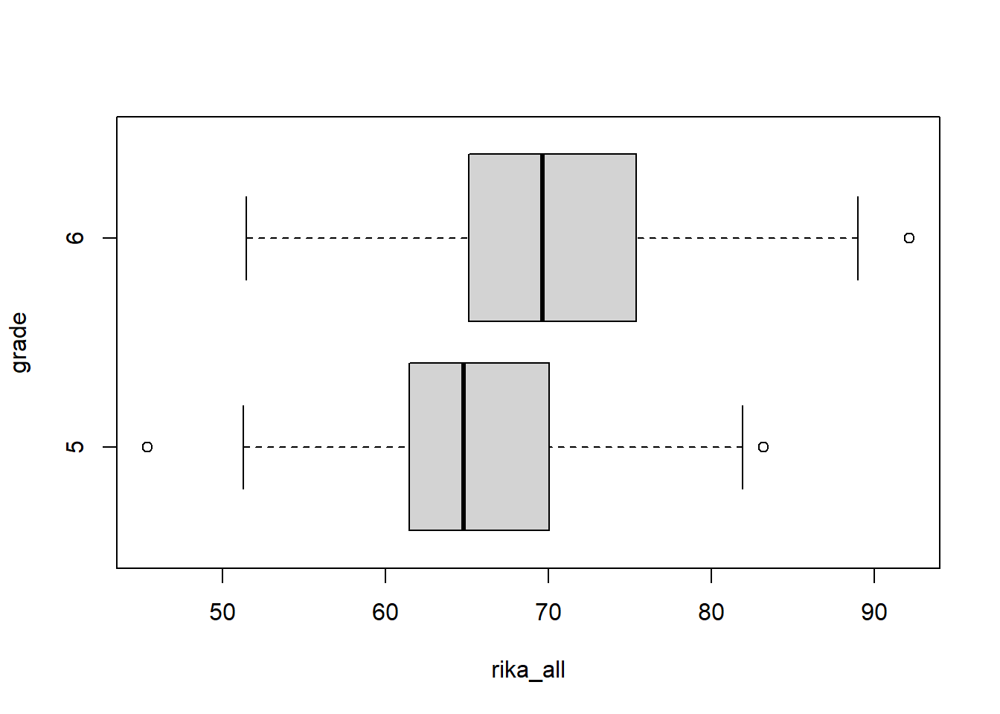
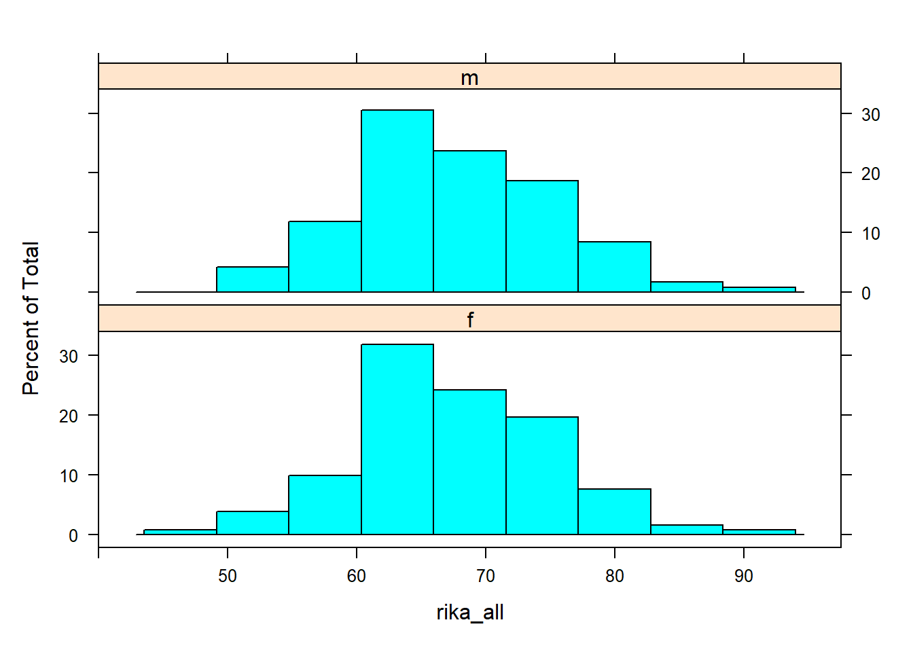
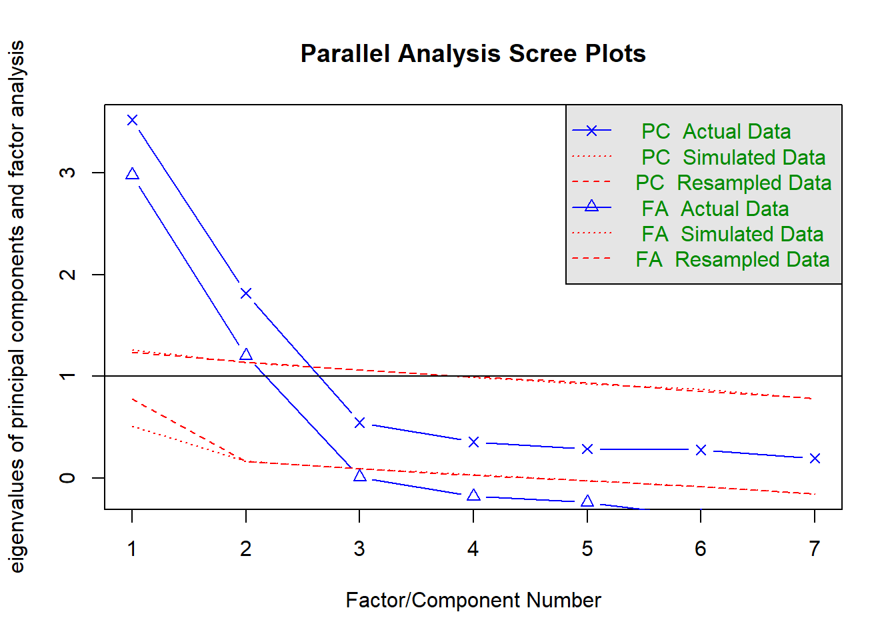
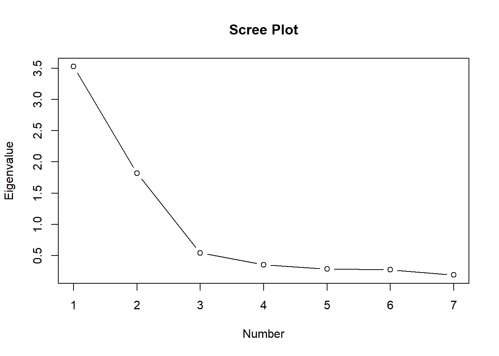
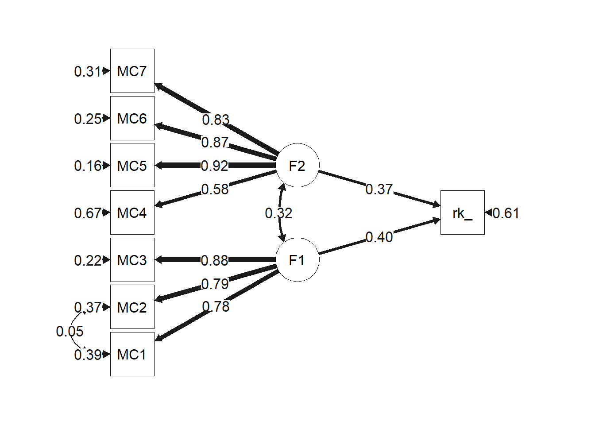
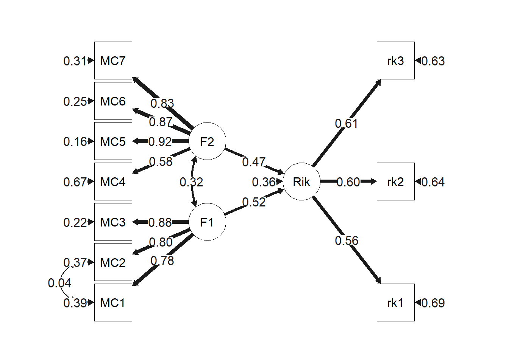

4 ５つの課題
4.1 Q1.各教科の平均得点の変数を作成せよ
1つ目の課題では、各教科の平均得点の変数を作成することが求められている。つまり、算数と理科のそれぞれについて3回分を平均した得点の変数を作成する必要がある。ここでは、apply関数を使って、3回分のテスト平均を行ごと（MARGIN=1）に求めた変数を作成する。str関数の出力結果を見ると、新しい変数が作成できていることが確認できる。
dat1$sansu_all = apply(dat1[,7:9], MARGIN = 1, mean) #算数平均の作成
dat1$rika_all = apply(dat1[,10:12], MARGIN = 1, mean) #理科平均の作成
str(dat1)## tibble [250 x 21] (S3: tbl_df/tbl/data.frame)
## $ ID : num [1:250] 1 2 3 4 5 6 7 8 9 10 ...
## $ school : chr [1:250] "aoba" "aoba" "aoba" "aoba" ...
## $ grade : num [1:250] 5 5 5 5 5 5 5 5 5 5 ...
## $ class : num [1:250] 1 1 1 1 1 1 1 1 1 1 ...
## $ number : num [1:250] 1 2 3 4 5 6 7 8 9 10 ...
## $ sex : chr [1:250] "m" "f" "f" "f" ...
## $ sansu1 : num [1:250] 49.6 57.9 53 52.8 65.1 48.4 55.8 66.5 49.8 48.9 ...
## $ sansu2 : num [1:250] 50.5 80.5 69.3 63.4 79.4 73.9 72.9 74.1 71.6 71.2 ...
## $ sansu3 : num [1:250] 65.2 89.4 65.8 88.3 69.3 67.4 78.4 80.6 72.6 65.4 ...
## $ rika1 : num [1:250] 56.1 52.2 58.4 64.4 74.9 70.9 79 77.8 69.4 66.9 ...
## $ rika2 : num [1:250] 53.9 77 63 71.4 70.3 68.6 58.3 78.7 71.8 68.5 ...
## $ rika3 : num [1:250] 70.1 69.4 59.4 49 69.8 63.5 52.1 74.3 52.7 66.4 ...
## $ MC1 : num [1:250] 2 2 5 2 4 2 3 6 6 2 ...
## $ MC2 : num [1:250] 3 4 5 4 4 2 4 6 6 6 ...
## $ MC3 : num [1:250] 2 3 4 4 6 4 4 6 5 6 ...
## $ MC4 : num [1:250] 4 7 5 4 6 5 5 4 5 4 ...
## $ MC5 : num [1:250] 4 4 5 3 5 6 3 3 5 5 ...
## $ MC6 : num [1:250] 4 5 4 3 5 7 4 4 5 4 ...
## $ MC7 : num [1:250] 4 4 5 3 6 7 4 4 5 4 ...
## $ sansu_all: num [1:250] 55.1 75.9 62.7 68.2 71.3 ...
## $ rika_all : num [1:250] 60 66.2 60.3 61.6 71.7 ...4.2 Q2.学年間で、理科の平均得点に差があるかを検討せよ
2つ目の課題では、1つ目の課題で統合した理科の平均得点について、学年間で差があるかを検討することが求められている。まずは、当該変数の学年ごとの基礎統計量と分布を確認してみよう。psychパッケージのdescribeBy関数を使用して、学年ごとの理科得点を確認してみよう。また、boxplot関数を使用して、学年ごとの理科得点の分布を確認してみよう。
describeBy(dat1$rika_all, group = dat1$grade)##
## Descriptive statistics by group
## group: 5
## vars n mean sd median trimmed mad min max range skew kurtosis se
## X1 1 125 64.93 6.53 64.8 65 6.72 45.4 83.2 37.8 -0.01 0.28 0.58
## ------------------------------------------------------------
## group: 6
## vars n mean sd median trimmed mad min max range skew kurtosis se
## X1 1 125 70.24 7.31 69.63 70.23 7.51 51.47 92.13 40.67 0.11 0.04 0.65boxplot(rika_all~grade, data = dat1, horizontal = T) #学年ごとの箱ひげ図
出力を見ると、第6学年の方が5点ほど平均点が高いことが見て取れる。ただし、標準偏差も第6学年の方が大きい。箱ひげ図を見ると、第6学年の方が得点が広く分布していることが視覚的にも理解できる。
それでは、統計的に見て学年間で平均値に差があると主張できるだろうか？ここでは独立した２群の平均値差を比較するため、Welchのｔ検定を行う。帰無仮説は、「学年間で平均値に差はない（差＝０）」である。
g5 = dat1$rika_all[dat1$grade == "5"] #5年の抽出
g6 = dat1$rika_all[dat1$grade == "6"] #6年の抽出
t.test(g6, g5, var.equal=F) #F=Welchのt検定##
## Welch Two Sample t-test
##
## data: g6 and g5
## t = 6.0581, df = 244.91, p-value = 5.159e-09
## alternative hypothesis: true difference in means is not equal to 0
## 95 percent confidence interval:
## 3.586313 7.041954
## sample estimates:
## mean of x mean of y
## 70.23920 64.92507t 検定の結果を見ると、p 値は非常に小さく、1%水準で有意であることが分かる。よって、帰無仮説を棄却し、学年間で平均値に差があると判断する。
しかし、これは平均値に差があるかを検討するものであって、差の大きさを意味するものではない。そこで、次に、差の大きさを表す指標である効果量を算出してみよう。
library(effsize)##
## 次のパッケージを付け加えます: 'effsize'## 以下のオブジェクトは 'package:psych' からマスクされています:
##
## cohen.dcohen.d(g6, g5, hedges.correction = T) #効果量 hedgesのg##
## Hedges's g
##
## g estimate: 0.7639706 (medium)
## 95 percent confidence interval:
## lower upper
## 0.5066901 1.0212512効果量は、g = 0.764 (95%CI[0.507, 1.021]) であり、中程度の大きさである。これは、標準偏差0.764個分の差があることを意味している。やはり、6年生の方が学習内容が定着しているせいか、平均点が高いようだ。
4.3 Q3.男女間で、算数の平均得点に差があるかを検討せよ
3つ目の課題では、1つ目の課題で統合した算数の平均得点について、性別間で差があるかを検討することが求められている。まずは、当該変数の性別ごとの基礎統計量と分布を確認してみよう。psychパッケージのdescribeBy関数を使用して、性別ごとの理科得点を確認してみよう。また、latticeパッケージのhistogram関数を使用して、学年ごとの理科得点の分布を確認してみよう。
describeBy(dat1$sansu_all, group = dat1$sex)##
## Descriptive statistics by group
## group: f
## vars n mean sd median trimmed mad min max range skew kurtosis se
## X1 1 132 64.5 7.18 64.15 64.47 7.24 48.47 82.6 34.13 0.1 -0.48 0.63
## ------------------------------------------------------------
## group: m
## vars n mean sd median trimmed mad min max range skew kurtosis se
## X1 1 118 60.04 7.1 59.63 59.91 7.12 44.9 86 41.1 0.38 0.47 0.65library(lattice)
histogram(~rika_all|sex, data = dat1, layout=c(1,2)) #性別で分けたヒストグラム
出力を見ると、女子の方が4点ほど平均点が高いことが見て取れる。ただし、ヒストグラムを見ても、視覚的に差を見出すことは難しそうだ。
では、統計的に見て性別間で平均値に差があると主張できるだろうか？ここでは独立した２群の平均値差を比較するため、Welchのｔ検定を行う。帰無仮説は、「性別間で平均値に差はない（差＝０）」である。
m = dat1$rika_all[dat1$sex == "m"] #第1群の指定
f = dat1$rika_all[dat1$sex == "f"] #第2群の指定
t.test(m, f, var.equal=F) #Welchのt検定##
## Welch Two Sample t-test
##
## data: m and f
## t = 0.16293, df = 242.64, p-value = 0.8707
## alternative hypothesis: true difference in means is not equal to 0
## 95 percent confidence interval:
## -1.704246 2.011608
## sample estimates:
## mean of x mean of y
## 67.66328 67.50960t 検定の結果を見ると、p 値は0.05よりも大きく、有意ではないことが分かる。よって、帰無仮説は棄却できず、性別間で平均値に差があるとは判断できない。
しかし、これは平均値に差があるかを検討するものであって、差の大きさを意味するものではない。そこで、次に、差の大きさを表す指標である効果量を算出してみよう。
library(effsize)
cohen.d(m, f, hedges.correction = T) #効果量 hedgesのg##
## Hedges's g
##
## g estimate: 0.02062146 (negligible)
## 95 percent confidence interval:
## lower upper
## -0.2281551 0.2693980効果量は、g = 0.007 (95%CI[-0.242, 0.253]) であり、極めて小さい。どうやら、算数のテストに性差は見られないようだ。
4.4 Q4.メタ認知尺度の因子構造について検討せよ
4つ目の課題では、質問紙のデータを基に、メタ認知尺度の因子構造を検討することが求められている。メタ認知に関する先行研究を調べると、研究間で提案されている因子構造はやや異なるものの、2因子として解釈する研究が多いことが分かる（Craig et al., 2020）。そこで、2因子を最有力候補としつつも、得られたデータに基づき因子数を検討しながら、探索的因子分析を行っていくことにする。
はじめに、3つの方法で因子数の予備的な検討を行う。3つの方法とは順に、平行分析、ガットマン基準、スクリーテストである。
4.4.1 平行分析
平行分析とは、データに含まれている誤差を推定し、誤差よりも大きな情報を持った因子数を抽出する方法である。平行分析では、まず、データと同じサンプルサイズの乱数を大量に発生させ、その乱数同士の相関行列の固有値を算出し、プロットする（点線部分）。次に、実データの固有値の推移をプロットし（実線部分）、2つの線の交差点以上の因子数を採用する。
dat_MC = dat1[,c(13:19)] #13～19行目の取り出し
fa.parallel(dat_MC) #平行分析
## Parallel analysis suggests that the number of factors = 2 and the number of components = 2平行分析の結果に基づくと、因子数２と３の間に点線部分があることから、因子数として２因子が提案されたと解釈できる。
4.4.2 ガットマン基準とスクリーテスト
ガットマン基準とは、固有値が1以上の因子を採用する方法である。また、スクリーテストとは、固有値の大きさをプロットし（スクリープロット）、推移がなだらかになる直前までを因子として抽出する方法である。
cor = cor(dat_MC) #項目間の相関
(eigen = eigen(cor)$values) #固有値## [1] 3.5250329 1.8181812 0.5456079 0.3561968 0.2871249 0.2754576 0.1923987plot(eigen, type="b", main="Scree Plot", xlab="Number", ylab="Eigenvalue")
固有値の減衰状況を見ると、第3因子で1を下回るため、第２因子までを採用するべきだと判断できる。また、スクリープロットを見ると、第3因子から推移がなだらかになっているため、第2因子までを採用するべきだと判断できる。
4.4.3 探索的因子分析
では、2因子構造を候補として、探索的因子分析を行おう。
efa1 = factanal(x=dat_MC, factors=2, fm="ml", rotation="none") #最尤法 回転なし（初期解）
print(efa1, cutoff=0.35) #因子負荷量0.35以下を非表示##
## Call:
## factanal(x = dat_MC, factors = 2, rotation = "none", fm = "ml")
##
## Uniquenesses:
## MC1 MC2 MC3 MC4 MC5 MC6 MC7
## 0.363 0.360 0.240 0.583 0.158 0.250 0.305
##
## Loadings:
## Factor1 Factor2
## MC1 0.446 0.661
## MC2 0.450 0.661
## MC3 0.541 0.684
## MC4 0.637
## MC5 0.862
## MC6 0.821
## MC7 0.792
##
## Factor1 Factor2
## SS loadings 3.145 1.597
## Proportion Var 0.449 0.228
## Cumulative Var 0.449 0.677
##
## Test of the hypothesis that 2 factors are sufficient.
## The chi square statistic is 5.77 on 8 degrees of freedom.
## The p-value is 0.673efa2 = factanal(x=dat_MC, factors=2, fm="ml", rotation="promax") #最尤法 promax回転
print(efa2, cutoff=0.35) #因子負荷量0.35以下を非表示##
## Call:
## factanal(x = dat_MC, factors = 2, rotation = "promax", fm = "ml")
##
## Uniquenesses:
## MC1 MC2 MC3 MC4 MC5 MC6 MC7
## 0.363 0.360 0.240 0.583 0.158 0.250 0.305
##
## Loadings:
## Factor1 Factor2
## MC1 0.822
## MC2 0.823
## MC3 0.874
## MC4 0.466
## MC5 0.940
## MC6 0.879
## MC7 0.845
##
## Factor1 Factor2
## SS loadings 2.595 2.214
## Proportion Var 0.371 0.316
## Cumulative Var 0.371 0.687
##
## Factor Correlations:
## Factor1 Factor2
## Factor1 1.000 0.379
## Factor2 0.379 1.000
##
## Test of the hypothesis that 2 factors are sufficient.
## The chi square statistic is 5.77 on 8 degrees of freedom.
## The p-value is 0.673初期解（fit1）においては、回転を行っていないため、MC1~3が上手く識別できていない。そこで、回転を加えると(fit2)、2つの因子にきれいに分かれていることが分かる。MC4の項目の因子負荷量がやや低いものの、0.4を越えているため許容範囲内である。また、因子間相関は、0.379であることが分かる。
4.4.4 信頼性分析
次に、各因子の信頼性係数を確認してみる。
alpha(dat_MC[,1:3])$total #F1 α係数## raw_alpha std.alpha G6(smc) average_r S/N ase mean sd
## 0.8617474 0.8621181 0.8085117 0.6757663 6.252584 0.01513098 4.650667 1.35251
## median_r
## 0.6890691alpha(dat_MC[,4:7])$total #F2 α係数## raw_alpha std.alpha G6(smc) average_r S/N ase mean sd
## 0.8713927 0.8715736 0.853696 0.6291681 6.786558 0.01354398 4.717 1.182478
## median_r
## 0.6156342library(GPArotation)
omega(nfactors = 1, dat_MC[,1:3])$omega.tot #F1 ω係数## Omega_h for 1 factor is not meaningful, just omega_t## [1] 0.8629133omega(nfactors = 1, dat_MC[,4:7])$omega.tot #F2 ω係数## Omega_h for 1 factor is not meaningful, just omega_t## [1] 0.8796481どちらの指標も0.8を越えているので良好である。これは、項目間で回答傾向が一貫していることを意味している。
4.5 Q5.仮説モデルを立て、構造方程式モデリングを用いた分析を実行せよ
5つ目の課題では、これまでの知見を参考に仮説モデルを立て、データへの適合を確認する。先行研究より、メタ認知は学習成績に正の影響を及ぼすことが指摘されている（e.g., Ohtani & Hisasaka, 2018）。また、理科の学習においては、算数の知識が必要になる場面があることから、算数から理科への正の影響が想定できる。
4.5.1 モデル１
モデル１として、メタ認知が理科得点に正の影響を与えているというモデルを考えてみる。
library(lavaan)## This is lavaan 0.6-9
## lavaan is FREE software! Please report any bugs.##
## 次のパッケージを付け加えます: 'lavaan'## 以下のオブジェクトは 'package:psych' からマスクされています:
##
## cor2covmodel1="
F1 =~ MC1 + MC2 + MC3
F2 =~ MC4 + MC5 + MC6 + MC7
rika_all ~ F1 + F2
MC1 ~~ MC2
"
fit1 = sem(model = model1, data = dat1)
summary(fit1, standardized=T, fit.measures=T, ci=T, rsquare=T)## lavaan 0.6-9 ended normally after 46 iterations
##
## Estimator ML
## Optimization method NLMINB
## Number of model parameters 19
##
## Number of observations 250
##
## Model Test User Model:
##
## Test statistic 46.391
## Degrees of freedom 17
## P-value (Chi-square) 0.000
##
## Model Test Baseline Model:
##
## Test statistic 1110.271
## Degrees of freedom 28
## P-value 0.000
##
## User Model versus Baseline Model:
##
## Comparative Fit Index (CFI) 0.973
## Tucker-Lewis Index (TLI) 0.955
##
## Loglikelihood and Information Criteria:
##
## Loglikelihood user model (H0) -3450.639
## Loglikelihood unrestricted model (H1) -3427.444
##
## Akaike (AIC) 6939.279
## Bayesian (BIC) 7006.186
## Sample-size adjusted Bayesian (BIC) 6945.955
##
## Root Mean Square Error of Approximation:
##
## RMSEA 0.083
## 90 Percent confidence interval - lower 0.055
## 90 Percent confidence interval - upper 0.112
## P-value RMSEA <= 0.05 0.028
##
## Standardized Root Mean Square Residual:
##
## SRMR 0.073
##
## Parameter Estimates:
##
## Standard errors Standard
## Information Expected
## Information saturated (h1) model Structured
##
## Latent Variables:
## Estimate Std.Err z-value P(>|z|) ci.lower ci.upper
## F1 =~
## MC1 1.000 1.000 1.000
## MC2 0.954 0.073 13.027 0.000 0.811 1.098
## MC3 1.123 0.115 9.790 0.000 0.898 1.348
## F2 =~
## MC4 1.000 1.000 1.000
## MC5 1.550 0.154 10.064 0.000 1.248 1.852
## MC6 1.545 0.157 9.836 0.000 1.237 1.853
## MC7 1.445 0.151 9.596 0.000 1.150 1.740
## Std.lv Std.all
##
## 1.218 0.779
## 1.162 0.794
## 1.368 0.884
##
## 0.800 0.577
## 1.240 0.916
## 1.236 0.868
## 1.156 0.829
##
## Regressions:
## Estimate Std.Err z-value P(>|z|) ci.lower ci.upper
## rika_all ~
## F1 2.437 0.385 6.334 0.000 1.683 3.191
## F2 3.433 0.611 5.617 0.000 2.235 4.631
## Std.lv Std.all
##
## 2.967 0.401
## 2.746 0.371
##
## Covariances:
## Estimate Std.Err z-value P(>|z|) ci.lower ci.upper
## .MC1 ~~
## .MC2 0.040 0.129 0.313 0.755 -0.212 0.292
## F1 ~~
## F2 0.310 0.080 3.885 0.000 0.153 0.466
## Std.lv Std.all
##
## 0.040 0.046
##
## 0.318 0.318
##
## Variances:
## Estimate Std.Err z-value P(>|z|) ci.lower ci.upper
## .MC1 0.961 0.159 6.058 0.000 0.650 1.271
## .MC2 0.789 0.139 5.691 0.000 0.517 1.061
## .MC3 0.524 0.161 3.258 0.001 0.209 0.839
## .MC4 1.279 0.120 10.677 0.000 1.044 1.514
## .MC5 0.296 0.053 5.614 0.000 0.192 0.399
## .MC6 0.500 0.065 7.732 0.000 0.373 0.626
## .MC7 0.608 0.069 8.807 0.000 0.472 0.743
## .rika_all 33.246 3.156 10.534 0.000 27.060 39.432
## F1 1.483 0.241 6.150 0.000 1.010 1.956
## F2 0.639 0.133 4.817 0.000 0.379 0.900
## Std.lv Std.all
## 0.961 0.393
## 0.789 0.369
## 0.524 0.219
## 1.279 0.667
## 0.296 0.161
## 0.500 0.247
## 0.608 0.313
## 33.246 0.607
## 1.000 1.000
## 1.000 1.000
##
## R-Square:
## Estimate
## MC1 0.607
## MC2 0.631
## MC3 0.781
## MC4 0.333
## MC5 0.839
## MC6 0.753
## MC7 0.687
## rika_all 0.393library(semPlot)
semPaths(fit1, "std", rotation = 2, edge.label.cex = 1.2, style="lisrel",
fade=F,theme='gray',sizeMan = 8)
適合度を見ると、CFIとTLIは0.9を越えており、RMSEAも許容できる値になっている。2つの因子からのパス係数はどちらも有意である。決定係数（説明率）を見ると、このモデルで理科得点の変動の39.3%を説明できている。
4.5.2 モデル２
さらにモデルを改善できるか試してみよう。モデル1では、3回の理科テストの平均得点を観測変数として使用したが、今度は、3回のテスト得点の背後に理科学力という潜在変数（因子）があるという仮定でモデル2を組んでみよう。
model2="
F1 =~ MC1 + MC2 + MC3
F2 =~ MC4 + MC5 + MC6 + MC7
Rika =~ rika1 + rika2 + rika3
Rika ~ F1 + F2
MC1 ~~ MC2
"
fit2 = sem(model = model2, data = dat1)
summary(fit2, standardized=T, fit.measures=T, ci=T, rsquare=T)## lavaan 0.6-9 ended normally after 67 iterations
##
## Estimator ML
## Optimization method NLMINB
## Number of model parameters 24
##
## Number of observations 250
##
## Model Test User Model:
##
## Test statistic 62.476
## Degrees of freedom 31
## P-value (Chi-square) 0.001
##
## Model Test Baseline Model:
##
## Test statistic 1208.783
## Degrees of freedom 45
## P-value 0.000
##
## User Model versus Baseline Model:
##
## Comparative Fit Index (CFI) 0.973
## Tucker-Lewis Index (TLI) 0.961
##
## Loglikelihood and Information Criteria:
##
## Loglikelihood user model (H0) -5333.479
## Loglikelihood unrestricted model (H1) -5302.241
##
## Akaike (AIC) 10714.959
## Bayesian (BIC) 10799.474
## Sample-size adjusted Bayesian (BIC) 10723.392
##
## Root Mean Square Error of Approximation:
##
## RMSEA 0.064
## 90 Percent confidence interval - lower 0.041
## 90 Percent confidence interval - upper 0.087
## P-value RMSEA <= 0.05 0.152
##
## Standardized Root Mean Square Residual:
##
## SRMR 0.066
##
## Parameter Estimates:
##
## Standard errors Standard
## Information Expected
## Information saturated (h1) model Structured
##
## Latent Variables:
## Estimate Std.Err z-value P(>|z|) ci.lower ci.upper
## F1 =~
## MC1 1.000 1.000 1.000
## MC2 0.954 0.073 13.035 0.000 0.811 1.098
## MC3 1.117 0.114 9.839 0.000 0.895 1.340
## F2 =~
## MC4 1.000 1.000 1.000
## MC5 1.551 0.154 10.060 0.000 1.249 1.853
## MC6 1.546 0.157 9.833 0.000 1.238 1.854
## MC7 1.445 0.151 9.592 0.000 1.150 1.741
## Rika =~
## rika1 1.000 1.000 1.000
## rika2 1.058 0.163 6.490 0.000 0.739 1.378
## rika3 1.086 0.166 6.556 0.000 0.761 1.411
## Std.lv Std.all
##
## 1.221 0.781
## 1.165 0.796
## 1.364 0.882
##
## 0.799 0.577
## 1.240 0.916
## 1.236 0.868
## 1.156 0.829
##
## 5.547 0.561
## 5.871 0.601
## 6.026 0.611
##
## Regressions:
## Estimate Std.Err z-value P(>|z|) ci.lower ci.upper
## Rika ~
## F1 2.344 0.431 5.437 0.000 1.499 3.189
## F2 3.236 0.660 4.904 0.000 1.943 4.530
## Std.lv Std.all
##
## 0.516 0.516
## 0.466 0.466
##
## Covariances:
## Estimate Std.Err z-value P(>|z|) ci.lower ci.upper
## .MC1 ~~
## .MC2 0.033 0.128 0.256 0.798 -0.219 0.284
## F1 ~~
## F2 0.310 0.080 3.883 0.000 0.153 0.466
## Std.lv Std.all
##
## 0.033 0.038
##
## 0.317 0.317
##
## Variances:
## Estimate Std.Err z-value P(>|z|) ci.lower ci.upper
## .MC1 0.953 0.158 6.024 0.000 0.643 1.263
## .MC2 0.782 0.138 5.654 0.000 0.511 1.053
## .MC3 0.533 0.159 3.352 0.001 0.222 0.845
## .MC4 1.279 0.120 10.677 0.000 1.044 1.514
## .MC5 0.295 0.053 5.606 0.000 0.192 0.398
## .MC6 0.500 0.065 7.729 0.000 0.373 0.626
## .MC7 0.608 0.069 8.807 0.000 0.473 0.743
## .rika1 67.147 7.170 9.365 0.000 53.094 81.201
## .rika2 61.098 6.861 8.905 0.000 47.651 74.545
## .rika3 60.799 6.943 8.757 0.000 47.192 74.407
## F1 1.491 0.241 6.175 0.000 1.017 1.964
## F2 0.639 0.133 4.816 0.000 0.379 0.899
## .Rika 11.193 3.758 2.979 0.003 3.829 18.558
## Std.lv Std.all
## 0.953 0.390
## 0.782 0.366
## 0.533 0.223
## 1.279 0.667
## 0.295 0.161
## 0.500 0.247
## 0.608 0.313
## 67.147 0.686
## 61.098 0.639
## 60.799 0.626
## 1.000 1.000
## 1.000 1.000
## 0.364 0.364
##
## R-Square:
## Estimate
## MC1 0.610
## MC2 0.634
## MC3 0.777
## MC4 0.333
## MC5 0.839
## MC6 0.753
## MC7 0.687
## rika1 0.314
## rika2 0.361
## rika3 0.374
## Rika 0.636semPaths(fit2, "std", rotation = 2, edge.label.cex = 1.2, style="lisrel",
fade=F,theme='gray',sizeMan = 8)
潜在変数を導入したことで、適合度が向上し、メタ認知から理科学力への回帰係数が大きくなったことに注目して欲しい（i.e., 相関の希薄化の改善）。2つの因子からのパス係数はどちらも有意である。また、理科学力の決定係数は、63.6%と非常に高い。
4.5.3 モデル３
次に、モデル２と同様の方法で算数学力という潜在変数を追加してモデル3を組んでみよう。
model3="
F1 =~ MC1 + MC2 + MC3
F2 =~ MC4 + MC5 + MC6 + MC7
Sansu =~ sansu1 + sansu2 + sansu3
Rika =~ rika1 + rika2 + rika3
Sansu ~ F1 + F2
Rika ~ F1 + F2 + Sansu
MC1 ~~ MC2
Rika ~~ a*Rika
a > 0
"
fit3 = sem(model = model3, data = dat1)
summary(fit3, standardized=T, fit.measures=T, ci=T, rsquare=T)## lavaan 0.6-9 ended normally after 163 iterations
##
## Estimator ML
## Optimization method NLMINB
## Number of model parameters 33
## Number of inequality constraints 1
##
## Number of observations 250
##
## Model Test User Model:
##
## Test statistic 86.828
## Degrees of freedom 58
## P-value (Chi-square) 0.008
##
## Model Test Baseline Model:
##
## Test statistic 1570.755
## Degrees of freedom 78
## P-value 0.000
##
## User Model versus Baseline Model:
##
## Comparative Fit Index (CFI) 0.981
## Tucker-Lewis Index (TLI) 0.974
##
## Loglikelihood and Information Criteria:
##
## Loglikelihood user model (H0) -7896.848
## Loglikelihood unrestricted model (H1) -7853.434
##
## Akaike (AIC) 15859.695
## Bayesian (BIC) 15975.903
## Sample-size adjusted Bayesian (BIC) 15871.291
##
## Root Mean Square Error of Approximation:
##
## RMSEA 0.045
## 90 Percent confidence interval - lower 0.023
## 90 Percent confidence interval - upper 0.063
## P-value RMSEA <= 0.05 0.662
##
## Standardized Root Mean Square Residual:
##
## SRMR 0.058
##
## Parameter Estimates:
##
## Standard errors Standard
## Information Expected
## Information saturated (h1) model Structured
##
## Latent Variables:
## Estimate Std.Err z-value P(>|z|) ci.lower ci.upper
## F1 =~
## MC1 1.000 1.000 1.000
## MC2 0.954 0.073 13.030 0.000 0.810 1.097
## MC3 1.121 0.115 9.740 0.000 0.895 1.346
## F2 =~
## MC4 1.000 1.000 1.000
## MC5 1.551 0.154 10.059 0.000 1.249 1.853
## MC6 1.546 0.157 9.831 0.000 1.238 1.854
## MC7 1.446 0.151 9.590 0.000 1.150 1.741
## Sansu =~
## sansu1 1.000 1.000 1.000
## sansu2 0.531 0.058 9.086 0.000 0.417 0.646
## sansu3 0.505 0.061 8.219 0.000 0.384 0.625
## Rika =~
## rika1 1.000 1.000 1.000
## rika2 0.954 0.120 7.985 0.000 0.720 1.189
## rika3 1.038 0.123 8.470 0.000 0.798 1.279
## Std.lv Std.all
##
## 1.219 0.780
## 1.163 0.795
## 1.367 0.883
##
## 0.799 0.577
## 1.240 0.916
## 1.236 0.868
## 1.156 0.829
##
## 9.478 0.993
## 5.036 0.566
## 4.783 0.514
##
## 5.908 0.597
## 5.639 0.577
## 6.135 0.623
##
## Regressions:
## Estimate Std.Err z-value P(>|z|) ci.lower ci.upper
## Sansu ~
## F1 1.942 0.539 3.604 0.000 0.886 2.997
## F2 2.861 0.823 3.476 0.001 1.248 4.475
## Rika ~
## F1 1.600 0.331 4.842 0.000 0.953 2.248
## F2 2.238 0.505 4.430 0.000 1.247 3.228
## Sansu 0.422 0.055 7.736 0.000 0.315 0.529
## Std.lv Std.all
##
## 0.250 0.250
## 0.241 0.241
##
## 0.330 0.330
## 0.303 0.303
## 0.677 0.677
##
## Covariances:
## Estimate Std.Err z-value P(>|z|) ci.lower ci.upper
## .MC1 ~~
## .MC2 0.037 0.130 0.287 0.774 -0.217 0.292
## F1 ~~
## F2 0.310 0.080 3.883 0.000 0.153 0.466
## Std.lv Std.all
##
## 0.037 0.043
##
## 0.318 0.318
##
## Variances:
## Estimate Std.Err z-value P(>|z|) ci.lower ci.upper
## .Rika (a) 0.000 NA NA NA
## .MC1 0.957 0.159 5.998 0.000 0.644 1.269
## .MC2 0.787 0.140 5.640 0.000 0.514 1.061
## .MC3 0.527 0.162 3.255 0.001 0.209 0.844
## .MC4 1.280 0.120 10.678 0.000 1.045 1.514
## .MC5 0.295 0.053 5.605 0.000 0.192 0.398
## .MC6 0.500 0.065 7.731 0.000 0.373 0.626
## .MC7 0.608 0.069 8.808 0.000 0.472 0.743
## .sansu1 1.288 5.386 0.239 0.811 -9.268 11.845
## .sansu2 53.732 5.055 10.630 0.000 43.825 63.639
## .sansu3 63.698 5.876 10.841 0.000 52.182 75.214
## .rika1 63.015 5.794 10.877 0.000 51.659 74.370
## .rika2 63.760 5.840 10.918 0.000 52.314 75.206
## .rika3 59.478 5.501 10.813 0.000 48.697 70.259
## F1 1.487 0.242 6.144 0.000 1.013 1.961
## F2 0.639 0.133 4.815 0.000 0.379 0.899
## .Sansu 75.555 8.811 8.575 0.000 58.285 92.824
## Std.lv Std.all
## 0.000 0.000
## 0.957 0.391
## 0.787 0.368
## 0.527 0.220
## 1.280 0.667
## 0.295 0.161
## 0.500 0.247
## 0.608 0.313
## 1.288 0.014
## 53.732 0.679
## 63.698 0.736
## 63.015 0.644
## 63.760 0.667
## 59.478 0.612
## 1.000 1.000
## 1.000 1.000
## 0.841 0.841
##
## R-Square:
## Estimate
## Rika 1.000
## MC1 0.609
## MC2 0.632
## MC3 0.780
## MC4 0.333
## MC5 0.839
## MC6 0.753
## MC7 0.687
## sansu1 0.986
## sansu2 0.321
## sansu3 0.264
## rika1 0.356
## rika2 0.333
## rika3 0.388
## Sansu 0.159
##
## Constraints:
## |Slack|
## a - 0 0.000出力結果を見ると、モデル適合度がさらに向上したことが分かるだろう。また、算数よりも理科の方がメタ認知の影響が強いことが読み取れる。
この模範解答では、このモデル3を最終的なモデルとして採択する。その他にも様々なモデルが考えられるはずなのでぜひ試してみて欲しい。